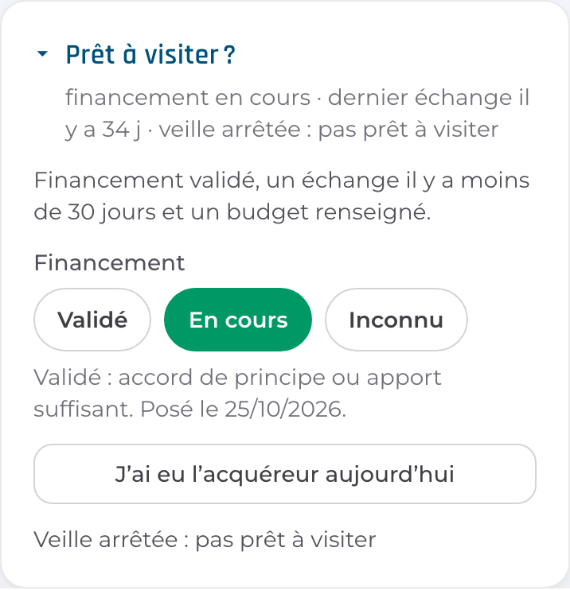
La fiche de M. Fontaine (démo, financement en cours) sur l’essai, le pli « Prêt à visiter ? » ouvert, comme à l’arrivée d’un acquéreur pas encore prêt. « Avant » est la fiche d’aujourd’hui ; les lignes « après » y insèrent la question avec les classes mêmes de l’application.

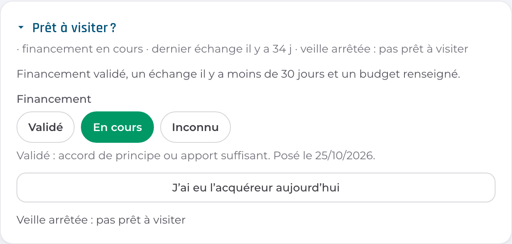
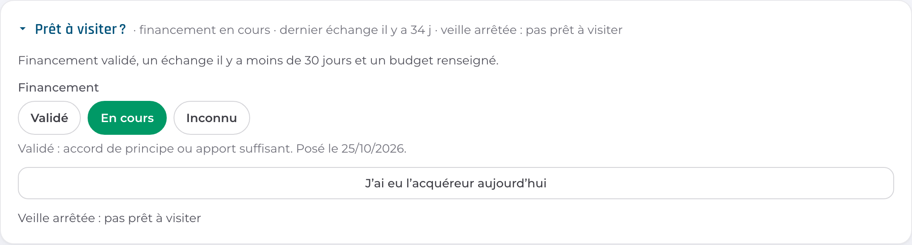
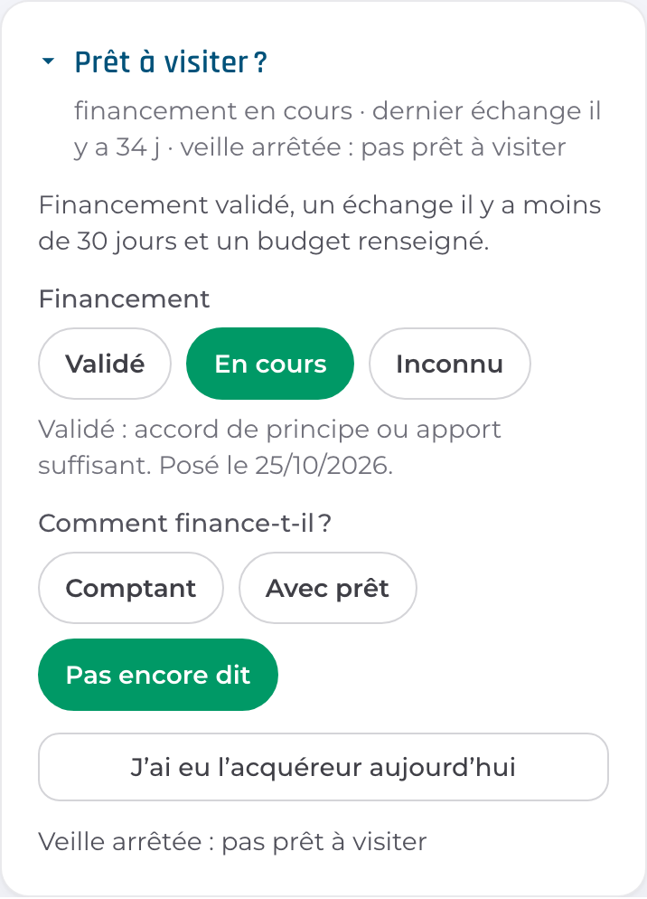
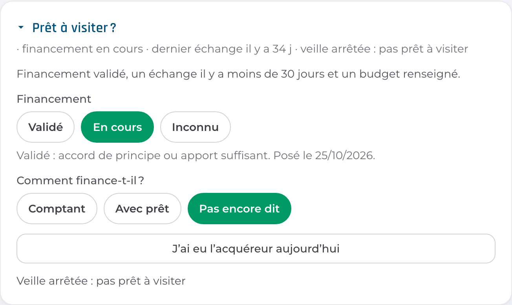
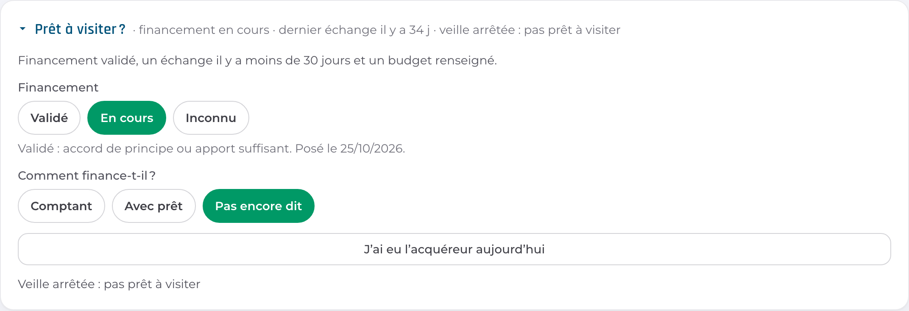
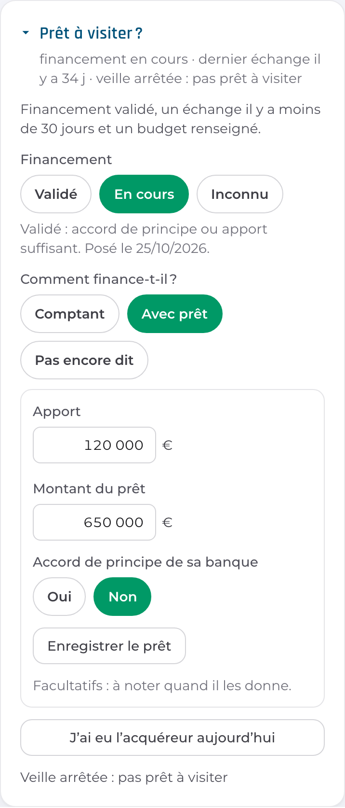
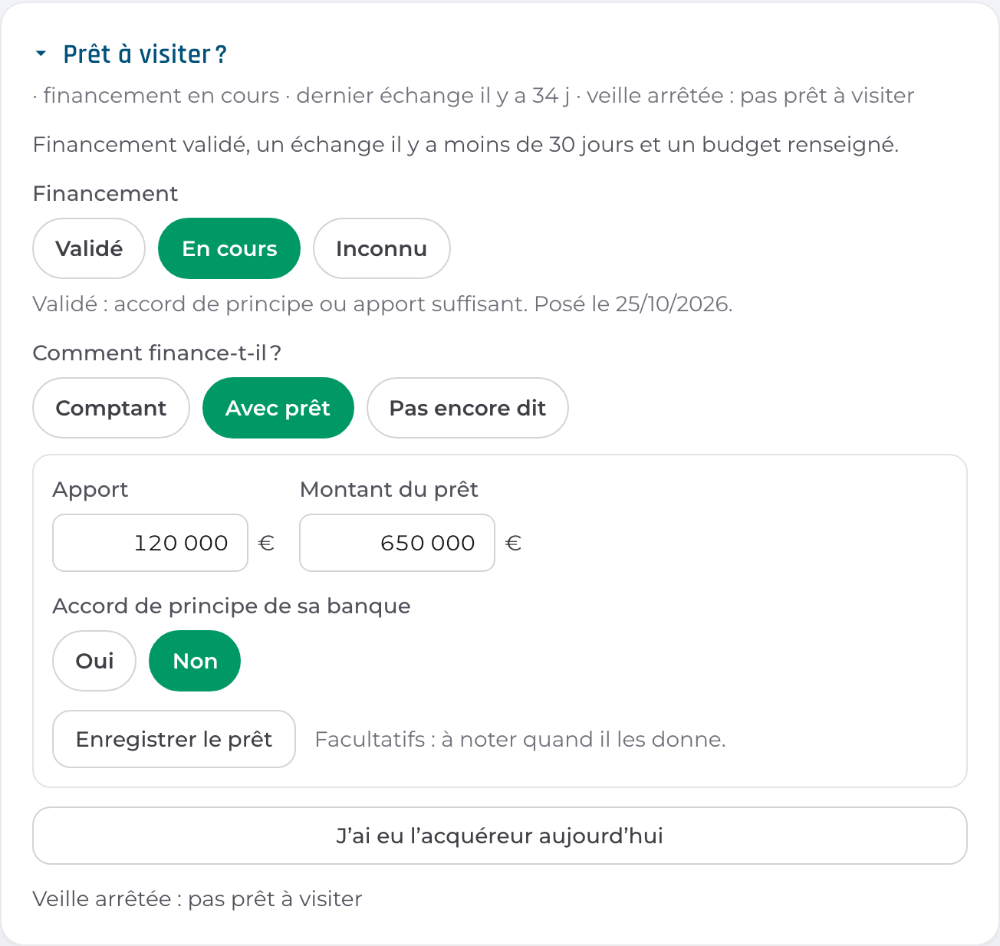
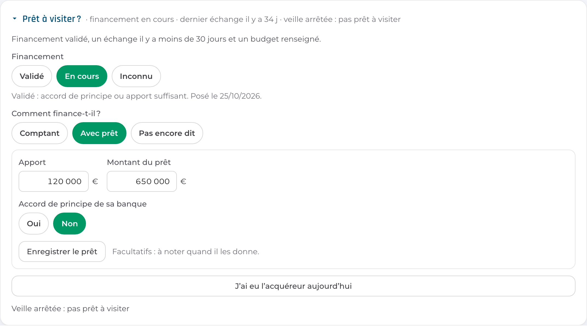
Ordinateur, la fiche à l’ouverture (1 512 × 771), avec le prêt noté
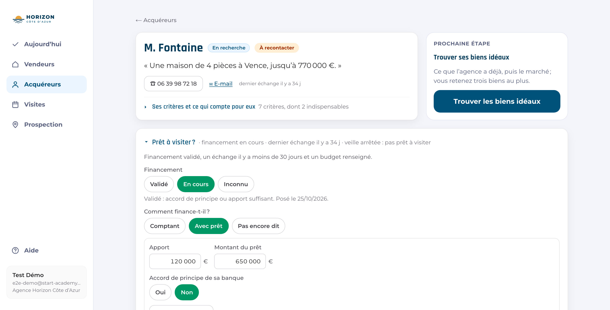
Lu dans ses notes (B4) : « À vérifier », un toucher le confirme
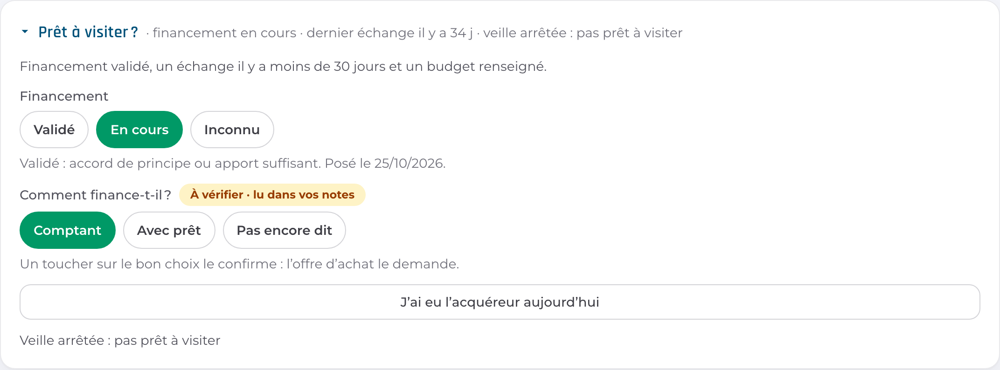
– « Prêt à visiter ? » ne dit que l’état du financement (Validé · En cours · Inconnu), jamais comment il finance.
– L’offre d’achat ne sait pas s’il emprunte : elle se signe comptant, « sans recours à un prêt ».
– Sous l’état du financement, « Comment finance-t-il ? » : Comptant · Avec prêt · Pas encore dit. Le même geste que l’état : un toucher l’enregistre.
– Toutes les fiches d’aujourd’hui sont en « Pas encore dit » (la migration du 28/11) : rien n’est reconstitué.
– Avec prêt : l’apport, le montant du prêt et l’accord de principe de sa banque (Oui / Non), tous facultatifs. Les montants s’écrivent avec l’espace des milliers, comme « Votre fourchette » ; « Enregistrer le prêt », en contour.
– Repasser en « Comptant » ou « Pas encore dit » efface l’apport, le prêt et l’accord : s’il y en a, l’écran le demande d’abord.
– L’état du financement et « Prêt à visiter » ne changent pas : ils ne lisent pas le mode (réponse 8).
– Lu dans ses notes (B4) : « À vérifier » à côté de la question ; un toucher sur le bon choix le confirme, et l’offre d’achat attend cette confirmation (réponse 10).
– Jamais montré au vendeur, ni dans un document, ni par un lien.
– Trois choix de plus dans ce pli, et le prêt : le pli n’est ouvert d’office que pour un acquéreur pas encore prêt ; prêt, il reste rangé dans « Tout le dossier ».
Question, avec sa réponse par défaut : si vous préférez moins de boutons, une seule ligne « Comment finance-t-il ? Pas encore dit · Le dire » qui ouvre les trois choix. Par défaut : les trois choix, visibles.